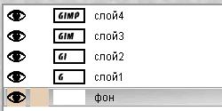
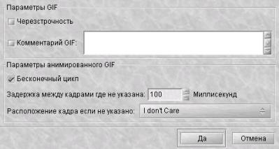
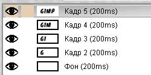
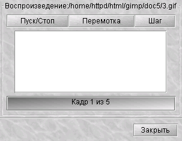
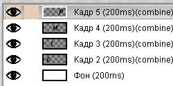

Анимационные изображения
в формате gif встречаются повсеместно в Internet.
Банеры, кнопки, логотипы, все они, используя даже
небольшую анимацию, вносят в содержание страницы некую
динамику. Существует множество различных программ,
направленных специально на создание анимационных
gif-изображений. Однако, большинство из них могут
работать только с готовыми изображениями, искажая их или
перемещая в пространстве. Поэтому совершенно логично,
создавать анимационные изображения, используя программу,
с помощью которой можно еще и рисовать. Ниже я хочу
показать, как легко можно создать эффект анимации,
используя GIMP.
Однако вначале, немного
о самой идее анимационного gif. Формат gif позволяет
хранить изображение в виде нескольких слоев, каждый из
которых может представлять собой отдельное изображение.
Идея в том, что каждому слою в gif-изображении, можно
задать время, в течении которого он будет отображаться.
Таким образом, чередуя слои можно получить анимацию.
Итак, как было сказано выше, для
создания анимационного gif нужно иметь несколько слоев
(подробнее о работе со слоями в GIMP читайте
здесь).
Рассмотрим простейший пример. Создайте новое
изображение. Самый нижний слой оставим белым. На других
четырех нарисуем появляющиеся буквы слова GIMP. Самый
простой способ это сделать - это написать надпись на
новом слое, затем создать четыре копии этого слоя и в
каждом из них стереть ненужные буквы. Таким образом
получится пять слоев, один из которых фон, четыре других
представляют собой побуквенно собирающееся слово GIMP:

Теперь сохраните полученное
изображение как gif (
Файл - Сохранить как). После
этого GIMP предложит Вам экспортировать изображение в
gif. При этом он даст выбрать, объединять ли слои в одно
изображение или сохранить их как анимацию. Т.к. нас
интересует именно анимация, выберем второе и нажмем
"
Экспорт". После этого откроется меню выбора
параметров анимационного gif:

Первые два параметра
задают общие свойства gif - это
черезстрочность и
комментарий. Нас больше интересуют параметры
анимации:
-
Бесконечный цикл. При
включении этого параметра, чередование слоев будет
выполняться бесконечно, т.е. после отображения
последнего слоя будет отображен первый. Если этот
параметр будет отключен, то анимация будет проиграна
один раз и остановится на изображении последнего
слоя.
-
Задержка между кадрами - время в
микросекундах, которое по умолчанию будет отображаться
каждый слой.
-
Расположение кадра - имеет
три режима. Первый (по умолчанию) -
I Don`t Care
(неважно), говорит GIMP распорядиться
самостоятельно. Второй -
Combine (наложение
слоев), накладвает один слой на другой не убирая
предыдущие, т.е. объединяет их. Таким образом, если у
вас есть прозрачные места в слоях, предыдущие слои будут
сквозь них проглядывать. По умолчанию GIMP обычно
использует именно этот режим как наиболее гибкий. Я тоже
всегда использую его. Третий режим -
Replace (один
кадр на слой), замещает предыдущий слой на
новый.
Используйте расположение слоев
по умолчанию, а время между кадрами поставьте 200. В
результате должен получиться вот такой gif:
Если теперь открыть этот gif с
помощью GIMP, то увидим, что в диалоге слоев в названии
каждого слоя в скобках добавился параметр - время
отображения. Таким образом, изменив значение в скобках
можно задать каждому слою свое персональное время
отображения. Например, установите значение 500 для
последнего слоя, чтобы полная надпись оставалась на
экране подольше.

Это был самый простой пример
создания анимашки. Но нам всегда охота большего! Настало
время обратиться к специальному пункту меню
Фильтры -
Анимация. Оно содержит три пункта -
Воспроизведение,
Оптимизация и
Разоптимизация. Разберемся что к чему:
-
Воспроизведение. Этот пункт позволяет нам
воспроизводить свежеполученное анимационное изображение:

Выше приведен анимационный gif
имитирующий работу этого фильтра, запущенного кнопкой
Пуск/Стоп. Таким образом видно, что эта кнопка
запускает проигрывание изображения и она же его
останавливает. Кнопка
Перемотка возвращает нас на
первый кадр изображения, кнопка
Шаг позволяет
менять кадры вручную. Но все это далеко не самые
интересные возможности этого фильтра. Если щелкнуть
мышкой на проигрываемое изображение, то Вы увидите как
курсор измениться на вертикальную стрелочку. Теперь вы
можете перетащить анимашку в любое(!) место экрана,
например в окно браузера, чтобы посмотреть как будет
выгляжеть этот анимационный рисунок на Вашей страничке.
Кстати, этой возможностью можно пользоваться и для
неанимационных изображений.
-
Оптимизация. Когда я впервые применил этот
фильтр, моему восторгу не было предела. Дело в том, что
каждый слой в анимационном gif-е представляет собой, по
сути, отдельное изображение и сохраняя gif как анимацию,
мы сохраняем сразу несколько изображений. Таким образом,
при большом количестве слоев размер нашего анимационного
gif будет расти прямо на глазах, что не есть хорошо,
учитывая стремление минимизировать размер изображений
для web. Одним из выходов из положения, может быть
уменьшение в ручную размеров каждого слоя и уничтожение
лишних кусков. Забудьте про это!!! Фильтр
Оптимизация в два счета сделает все за Вас!!!.
Фильтр делает приблизительно следующее: он просчитывает
каждый слой и находит изменившиеся точки, относительно
предыдущего и оставляет только их, изменяя размер слоя
на минимально возможный (т.е. обрезая по крайним
изменившимся точкам). При этом все неизменившиеся точки
внутри этого слоя будут заменены на прозрачные. Возьмите
недавно созданный gif с надписью GIMP и примените этот
фильтр.

Как видите, в каждом слое
осталось только по одной букве, причем весь белый цвет
был заменен на прозрачный, т.к. нет смысла таскать его в
каждый слой, имея единый на всех белый фон. Кроме того,
в названии слоя в скобках появился еще один параметр -
combine. Это как раз и есть режим
расположения
кадра. После применения фильтра
Оптимизация
этот режим всегда будет иметь значение
combine,
т.е. новый кадр будет прибавляться к предыдущим.
Попробуйте изменить этот параметр на значение
replace и Вы получите приблизительно следующее:
Такого же эффекта можно было бы
добиться и с режимом
combine, оставив изначально
в каждом слое только одну букву и применив фильтр
Оптимизация. Разница будет в том, что при этом
каждый слой будет содержать одну черную букву и одну
цвета фона, чтобы закрасить предыдущую. В результате -
больший объем файла. Однако, зачастую, выигрыш не столь
велик, а работать с
replace не очень удобно,
поэтому лично я никогда им не пользуюсь.
Кроме всего прочего,
Оптимизация
дает неоценимую помощь при работе со слоями в которой
присутствуют размытые изображения. Т.к. gif содержит в
себе максимум 256 цветов, то размытость объекта на
прозрачном фоне отобразить очень сложно и часто она
просто-напросто пропадает. Поэтому я всегда использую в
каждом слое фоновое изображение, а на нем уже рисую
новый элемент. Например, на сайте компании в которой я
работаю, мне нужно было изобразить
вращающийся солнечный блик на фоне
здания. Когда я сделал каждый блик в новом слое
отдельно от здания, при сохранении в gif он потерял
половину своих лучей и перестал быть размытым. Тогда я
скопировал изображение здания в каждый слой, нарисовал
на нем блики и оптимизировал. В результате получил то
что хотел, а размер файла уменьшился в три раза по
сравнению с неоптимизированным!
-
Разоптимизация. Фильтр обратный оптимизации. До
сих пор я не нашел ему должного применения, но вполне
возможно, что он может пригодиться, когда Вам нужно
будет внести изменения в оптимизированное изображение.
Итак, мы разобрались с основными
принципами создания анимационных gif с помощью GIMP.
Вкратце подводя итоги, можно сделать следующие
выводы:
1. Каждый кадр анимации представляет
собой отдельный слой изображения.
2. Каждому
кадру можно указать два параметра: время показа в
микросекундах и его тип, combine (объединение) или
replace (замещение). Параметры задаются в имени слоя и
заключаются в скобки, например: Слой1
(1000ms)(combine).
3. Оптимизация слоев
позволяет заметно уменьшить размеры анимационного
изображения.
Вот собственно и все об
основных приемах создания анимационных gif изображениях
с помощью GIMP. Надеюсь, эта небольшая статья оказалась
для Вас полезной. Если у Вас есть замечания или
дополнения, пишите мне на e-mail:
[email protected].